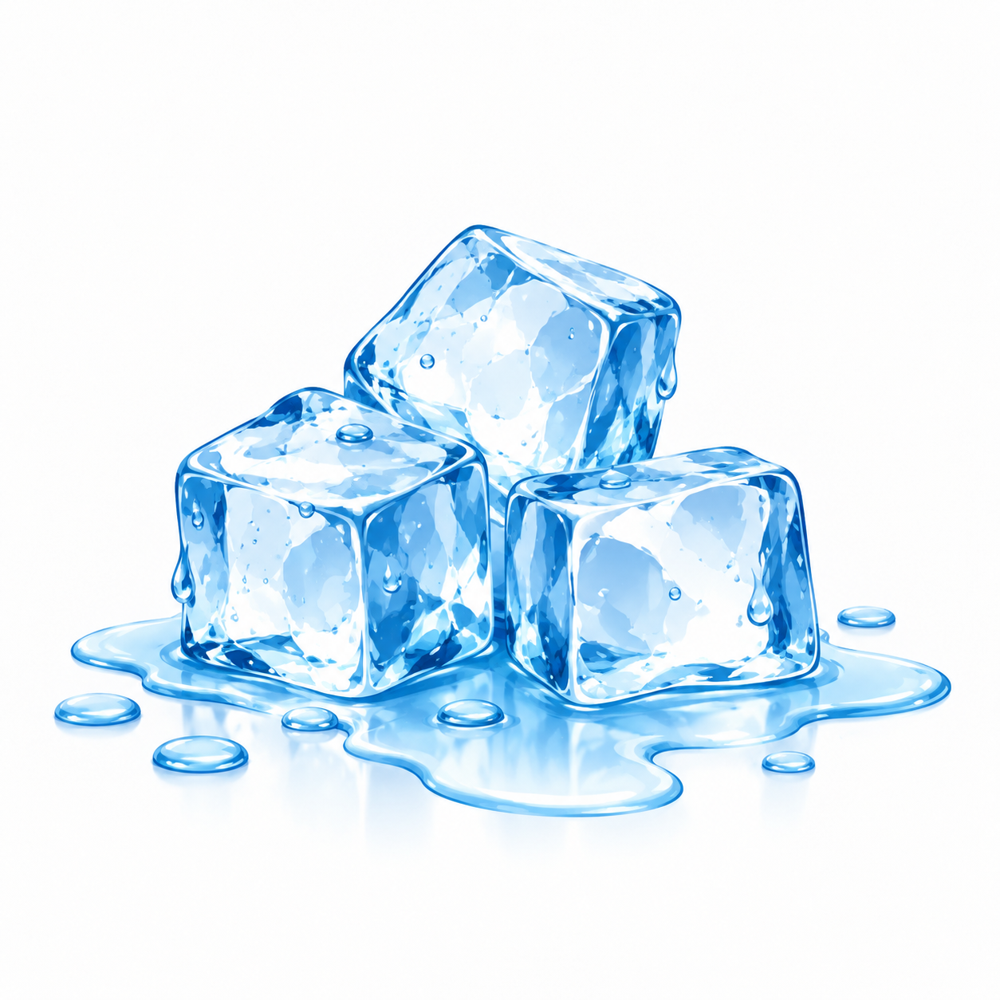
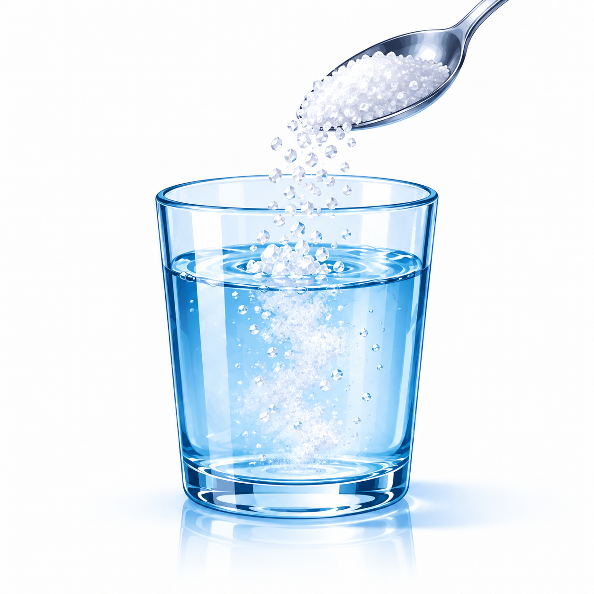
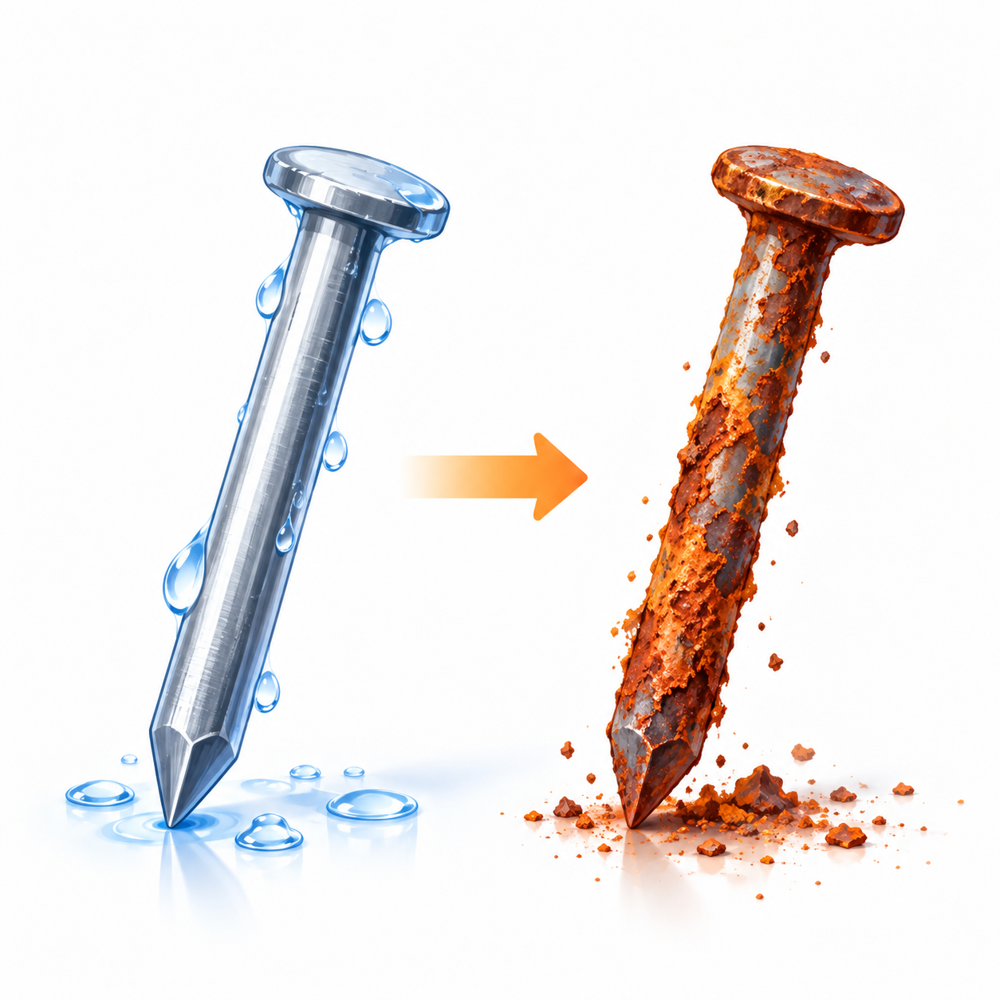

Tahap 3 dari 3
Klasifikasi fenomena
Apakah terbentuk zat baru?
Kriteria utama bukan sekadar “bisa kembali seperti semula”, tetapi apakah perubahan menghasilkan zat dengan komposisi dan sifat kimia berbeda.

Gula larut

Besi berkarat
Kertas terbakar
Kembali ke pertanyaan awal
Mengapa es dapat dibekukan kembali, tetapi kertas yang sudah terbakar tidak kembali menjadi kertas hanya dengan mendinginkannya?
Refleksi calon guru
Jika materi ini diajarkan kepada siswa SD/MI, bagian mana yang paling membutuhkan visualisasi: wujud zat, model partikel, perubahan wujud, atau perubahan kimia? Jelaskan alasannya.